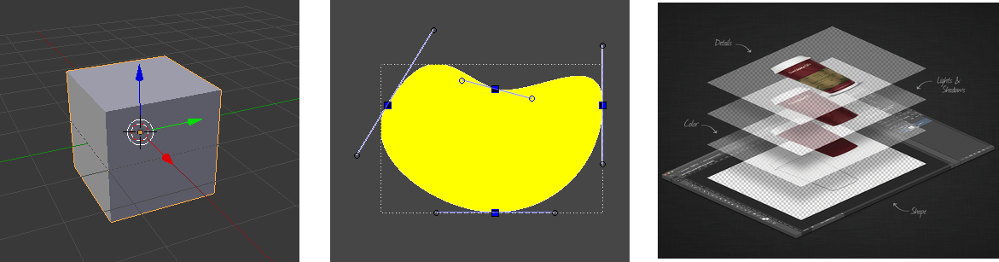

extendiendo aplicaciones gráficas
con python
el rol del programador en el equipo creativo
por Manuel Quiñones / manuq / @srmanuq
sobre mí, de qué va esta charla
mostrar el potencial que tienen las aplicaciones libres para extenderse con código y ajustarse a las necesidades de un negocio o proyecto
no es la idea convertir a cada uno en programador, sino mostrar que el rol del programador puede ser valioso en un grupo creativo
alcance
¿qué me permite hacer una aplicación?
¿cuál es el alcance, las posibilidades que me brinda?
todo lo que sus herramientas me permitan
cuando se usa para un proyecto real, "en modo experto"
en algún momento se empiezan a encontrar las limitaciones
necesidad de extender
cuando una aplicación se vuelve grande, madura, ampliamente usada
(el caso de las tres que vamos a ver)
muchos usuarios empiezan a querer hacer cosas muy diversas con la misma
es ahí cuando se agrega la capacidad de extenderla
¿qué significa agregar la capacidad de extender?
que los programadores exponen los elementos característicos de la aplicación para que puedan modificarse con código simple, más accesible (scripts) 
el software libre, se puede modificar
pero no cualquiera tiene la capacidad o el tiempo para hacerlo
embeberse en el proceso de desarrollo, leer el código fuente, aprender a compilarlo
scripting
las extensiones permiten agregar funcionalidad
sin modificar el código fuente del software
sin tener que recompilarlo
sin esperar a la próxima versión
los scripts exitosos se van incorporando a la aplicación
python
lenguaje de propósito general, de alto nivel
interpretado, no necesita compilarse
de tipado fuerte
accesible, fácil de leer y aprender
muy extendido en el mundo del SL

- blender
- gimp
- inkscape
se pueden extender con python!
catálogos / repositorios de extensiones
Gráfica Libre
Comunidad hispanohablante de usuarios, diseñadores gráficos, programadores, fotógrafos, animadores